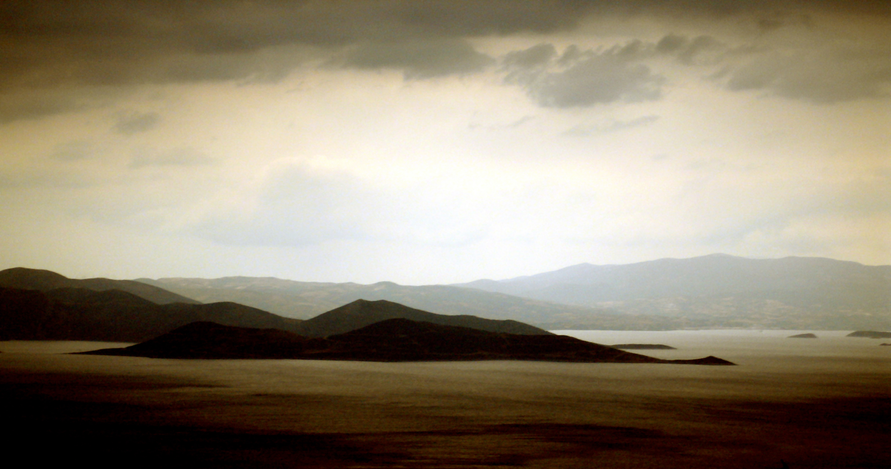

My travel tour to gani fawehinmi park in Ojota
Statue & park dedicated to an international activist of repute & defender of Rights and justice
This is a symbolic park named after the legend Chief Gani Fawehinmi, A lawyer per excellence and an advocate for the common man.
Today, the park service is a melting pot for all struggles emanating in the mega city (Lagos)in 2010, a park in Ojota was named after him by the Lagos state goverment
Status and park dedicated on 2010-3-9
By Lagos state goverment
By Chidera 2022-05-12
I went to the park to take pictures for my photography assignment. I'm really proud such size of attraction was dedicated to Gani Fawehinmi.
He was a man of honour and justice
The park had beautiful sceneries,though it needs more security,because of the Ojota opportunist. It requires maintenance too. But overall I loved it
Copyright||2022 My Travel Tour